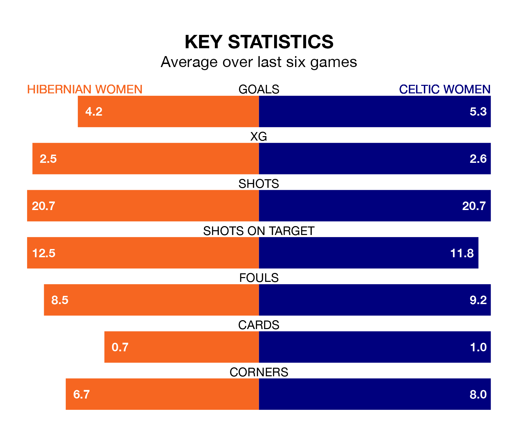

Two of SWPL 1's top sides face each other at the Excelsior Stadium in Sunday's kick-off, when fourth-placed Hibernian Women host second-placed Celtic Women.
Hibernian have picked up 12 wins and two draws from 19 games so far this season, and sit 11 points below the visitors going into the 4.010pm match.
Celtic, meanwhile, have won 16 and drawn one, picking up 49 points.
With 92 goals in 19 games so far this season, Celtic are the league's highest scorers with 4.8 goals per game. And they are conceding fewer than average, letting in 10 goals at a rate of 0.5 per game.
Hibernian are also above average scorers, with 3.1 goals per game, compared to a league average of 2.2. They have conceded 1.3 goals per game.
In Jorian Baucom, Hibs have the league's sharpest shooter so far this season. She has notched 19 goals in 19 appearances.
The visitors' top scorer, with 19 goals in 18 games, is Amy Gallagher.
In the last 10 years, Hibernian and Celtic have played each other on 12 occasions. Celtic won 11 of them and they drew once.
On average, Hibs scored 0.8 goals and Celtic 3.2 in those matches.
Their last meeting was on September 3, when Celtic won 4-2 away.
The home side are in fantastic form in SWPL 1, with five wins and one loss from their last six games.
With four wins and a draw over that period, Celtic's form is slightly worse – they have taken 13 points from 18, compared to Hibernian's 15.
Hibernian's last match was on January 31, a 4-0 win against Dundee United Women, with Eilidh Adams (two), Abbie Ferguson and Baucom getting the goals for Hibs.
Celtic beat Motherwell Women 2-0 last time out, on Wednesday, with Caitlin Hayes and Gallagher on the scoresheet.
Updated: 11:18 (UTC), 08/02/24